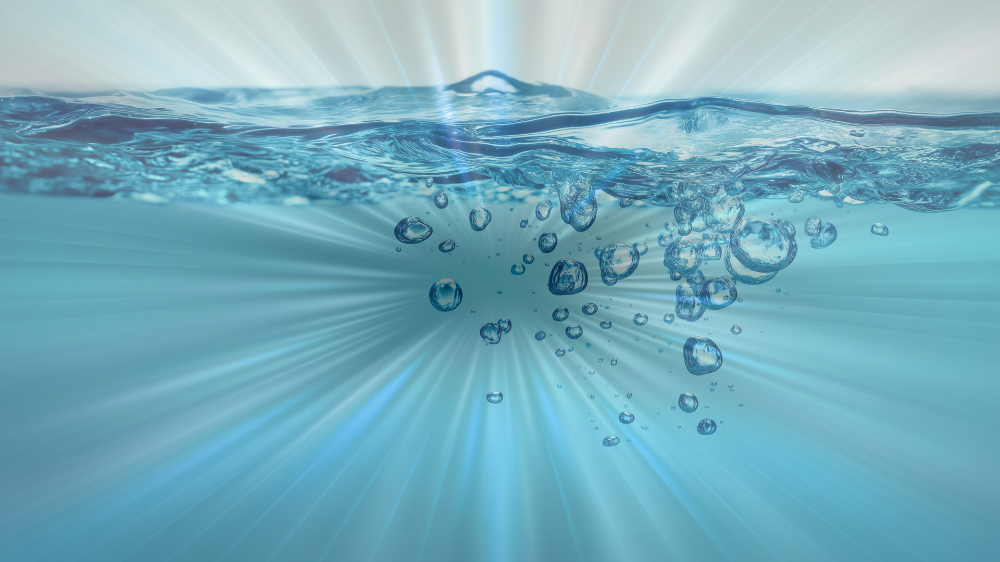
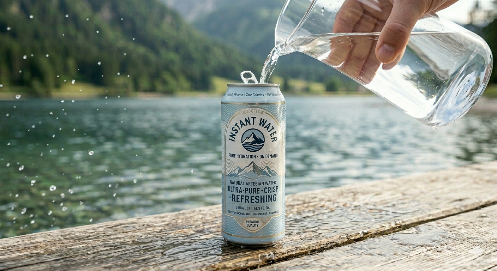

Composition
Two parts hydrogen,
Two parts hydrogen,
one part oxygen
Earth's proprietary H₂O formula has been refined over billions of years to achieve perfect molecular balance. Each molecule is has been naturally forged into perfection.
H₂OFormula
100%Pure
0 calPer serving

Performance
Creation at the speed
Creation at the speed
of pouring
InstantWater is created in real-time, ensuring you get the freshest hydration possible. The microsecond you pour water, your InstantWater is ready. No more waiting.
~0msLatency
instantAbsorption
∞Scalable

Sustainability
Infinitely renewable.
Infinitely renewable.
Endlessly recyclable.
InstantWater participates in the world's oldest supply chain: the water cycle. After use, your water evaporates, forms clouds, and returns as rain — completely free of charge.
0%Waste
4B+ yrsTrack record
♻️Self-renewing